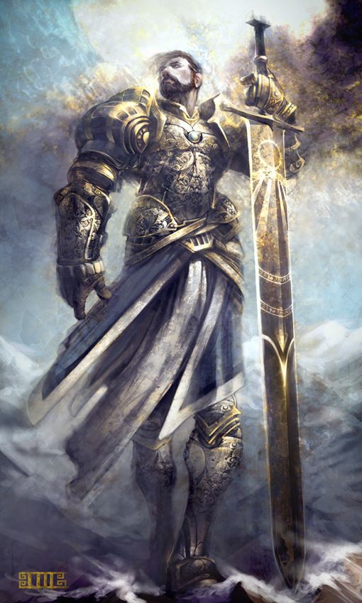

Vestido em uma armadura de placas que reluz a luz do sol, a despeito da poeira e sujeira de uma longa viagem,
um humano larga sua espada e escudo e coloca suas mãos em um homem fatalmente ferido. Radiação divina brilha de suas mãos,
o ferimento do homem se fecha e seus olhos se arregalam com espanto. Um anão se esgueira por detrás de um afloramento,
seu manto negro o torna praticamente invisível durante a noite, e observa uma banda de guerra orc celebrando sua recente vitória.
Silenciosamente, ele espreita em meio a eles e sussurra seu juramento e dois orcs morrem antes mesmo de perceberem que ele estava ali.
Com um cabelo prateado que brilha com um raio de luz que parece iluminar apenas ele, um elfo gargalha com exultação. Sua lança golpeia num piscar,
como o dos seus olhos, perfurando de novo e de novo em um gigante contorcendo-se, até que finalmente sua luz supera a escuridão dele.
Seja lá quais forem suas origens e suas missões, paladinos são unidos pelos seus juramentos de se imporem contra as forças do mal.
Quer seja jurado ante o altar de um deus com um sacerdote como testemunha, quer seja em um clareira sagrada diante dos espíritos da
natureza e seres feéricos, ou em um momento de desespero e aflição com os mortos como únicas testemunhas,
o juramento de um paladino é um laço poderoso. Ele é uma fonte de poder que transforma um guerreiro devotado em um campeão abençoado.
A CAUSA DA JUSTIÇA
Um paladino jura defender a justiça e integridade, se manter com as coisas boas do mundo contra a invasão das trevas e caçar as forças do mal
onde quer que ela se esconda. Diferentes paladinos se focam em vários aspectos da causa da justiça, mas todos estão sujeitos aos juramentos
que lhes concede poder para fazer seu trabalho sagrado. Embora, muitos paladinos serem devotos de deuses do bem, o poder de um paladino vem
tanto do comprometimento com a justiça per si, quanto de um deus. Os paladinos treinam por anos para aprender as perícias de combate,
dominando uma variedade de armas e armaduras. Mesmo assim, suas perícias marciais são secundárias ao poder mágico que ele empunha:
o poder de curar os doentes e feridos, de destruir os cruéis e os mortos-vivos e de proteger os inocentes e aqueles que se
unirem a eles na luta pela justiça.
ALÉM DA VIDA MUNDANA
Praticamente por definição, a vida de um paladino é uma vida de aventura. A menos que um ferimento permanente o tenha impedido de se
aventurar por um tempo, cada paladino vive nas linhas de frente da batalha cósmica contra o mal. Guerreiros são raros o suficiente nas fileiras
de milícias e exércitos do mundo, mas ainda menos pessoas podem reivindicar a verdadeira vocação de um paladino.
Quando eles recebem o chamado, esses guerreiros deixa suas antigas ocupações e se armam para lutar contra o mal.
Algumas vezes, seus juramentos os levam a servir à coroa como líderes de grupos de elite de cavaleiros, mas até entre esses,
sua lealdade primária é com a causa da justiça, não com a coroa ou país. Paladinos aventureiros levam seus trabalhos a sério.
A investigação de uma ruina antiga ou de uma cripta empoeirada pode ser uma missão guiada por um proposito maior que a aquisição de tesouro.
O mal espreita nas masmorras e florestas primitivas e, até mesmo, a menor vitória contra ele pode inclinar a balança cósmica para longe do esquecimento.
CRIANDO UM PALADINO
O aspecto mais importante de um personagem paladino é a natureza da sua busca sagrada.
Apesar da característica de classe relacionada ao seu juramento não aparecer até você chegar ao 3° nível,
planeje a escolha ao ler a descrição dos juramentos no final da classe. Você é um servo devotado do bem,
leal aos deuses da justiça e honra, um cavaleiro sagrado em uma armadura brilhante aventurando-se para destruir o mal?
Você é um glorioso campeão da luz, acalentando todas as belezas que se opõem contra as sombras,
um cavaleiro cujo juramento descende de tradições mais antigas que muitos deuses?
Ou você é amargurado solitário que jurou se vingar contra aqueles que fizeram grande mal,
enviado como um anjo da morte pelos deuses ou guiado pela sua própria vingança?
O apêndice B tem uma lista de muitos deuses adorados por paladinos através do multiverso, como Torm, Tyr,
Heironeous, Paladine, Kiri-Jolith, Dol Arrah, o Chama Prateada, Bahamut, Athena, Re-Horakhty e Heimdall.
Como você vivenciou o seu chamado para servir como paladino? Você ouviu um sussurro de um deus ou anjo oculto enquanto você rezava?
Outro paladino sentiu o potencial dentro de você e decidiu treina-o como um escudeiro?
Ou algum terrível evento – a destruição da sua casa, talvez – o levou às suas buscas?
Talvez você tenha tropeçado em um bosque sagrado ou num enclave élfico escondido e se
encontrou compelido a proteger todos esses refugiados da bondade e beleza.
Ou você pode ter recobrado de suas memorias mais antigas que a vida de paladino era sua vocação,
praticamente como se você tivesse sido enviado para o mundo com esse propósito estampado em sua alma.
Como guardiões contra as forças das trevas, paladinos raramente detém qualquer alinhamento maligno.
A maioria deles trilham o caminho da caridade e justiça. Considere como a cor da sua tendência irá influenciar
na sua busca sagrada e a maneira como ela conduzirá você diante dos deuses e dos mortais. Seu juramento e tendência
devem ser harmônicos ou seu juramento deve representar padrões de comportamento que você ainda não tenha alcançado.
Fonte: Vertente Geek